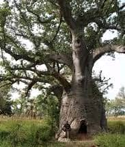

Bienvenue sur la page: Baobab de Toumousseni

Le Baobab de Toumousseni se dresse dans la province de la Comoé, au sud-ouest du Burkina Faso, près de la frontière ivoirienne. C’est un arbre millénaire qui domine la savane de sa silhouette massive. Son tronc énorme et creux fait plusieurs mètres de diamètre. Les habitants le considèrent comme un arbre sacré et protecteur. Il est un repère naturel pour les voyageurs depuis des générations. Sous son feuillage, la fraîcheur attire villageois et troupeaux. Le baobab est un symbole de vie, de résistance et de mémoire. Chaque branche raconte une saison, chaque cicatrice une histoire. Toumousseni est devenu connu grâce à ce géant végétal.

Selon la tradition locale, le baobab servait de lieu de réunion. Les anciens s’y rassemblaient pour régler les conflits et prendre des décisions. C’était aussi un lieu de prière et de rituels animistes. On y déposait des offrandes pour demander la pluie et la protection. L’arbre est vu comme un lien entre les vivants et les ancêtres. Certaines parties du tronc sont interdites aux femmes et aux non-initiés. Ces interdits montrent la profondeur spirituelle du site. Les jeunes du village viennent encore écouter les contes sous ses branches. Le baobab transmet l’histoire orale de génération en génération. C’est un livre ouvert sur la culture Sénoufo de la région.

Botaniquement, le baobab africain Adansonia digitata est impressionnant. Il peut vivre plus de 1000 ans et stocker des milliers de litres d’eau. Son écorce épaisse le protège des feux de brousse et de la sécheresse. Pendant la saison sèche, il perd ses feuilles mais reste debout. Ses fruits, appelés pain de singe, sont riches en vitamine C. Les feuilles et l’écorce servent aussi en médecine traditionnelle. Rien ne se perd dans cet arbre, tout est utile. C’est pourquoi on l’appelle « l’arbre de vie ». Le baobab de Toumousseni est l’un des plus imposants de la région. Sa taille et son âge en font une curiosité naturelle rare.

Le site attire les visiteurs curieux et les amateurs de nature. L’accès se fait depuis Banfora ou Sindou, par piste en saison sèche. Il faut prévoir un guide local pour bien comprendre l’histoire du lieu. Le guide explique les légendes et montre les zones sacrées. Le respect des coutumes est essentiel pour être bien accueilli. Le meilleur moment pour visiter est tôt le matin ou au coucher du soleil. La lumière dorée rend le tronc rouge et donne des photos magnifiques. Les enfants du village accompagnent souvent les visiteurs avec curiosité. L’ambiance est calme, authentique, loin du tourisme de masse. C’est une sortie simple mais pleine de sens.

Le baobab joue un rôle écologique important dans la savane. Il offre ombre, nourriture et abri à de nombreuses espèces. Les oiseaux, chauves-souris et insectes y trouvent refuge. Son système racinaire protège le sol contre l’érosion. En période de famine, ses fruits et feuilles sauvent des vies. Les communautés l’utilisent depuis toujours comme pharmacie naturelle. Préserver le baobab, c’est préserver l’équilibre de la zone. Des actions locales visent à protéger les vieux arbres de la région. Le tourisme responsable aide à sensibiliser à cette cause. Chaque visiteur devient un ambassadeur de sa conservation.
Si tu veux voir un arbre qui a vu passer des siècles, va à Toumousseni. Debout devant ce géant, tu te sens petit et vivant à la fois. Touche son écorce, écoute le vent dans ses branches, respire l’histoire. Ici, la nature et la culture ne font qu’un. Le baobab ne parle pas, mais il te raconte tout sans un mot. C’est un lieu de calme, de force et de fierté locale. Tu repartiras avec des images fortes et un respect nouveau pour la terre. Le Baobab de Toumousseni ne se visite pas, il se ressent. Ajoute-le à ton circuit Banfora-Sindou, tu ne le regretteras pas. Viens rencontrer le gardien silencieux du sud-ouest burkinabè.